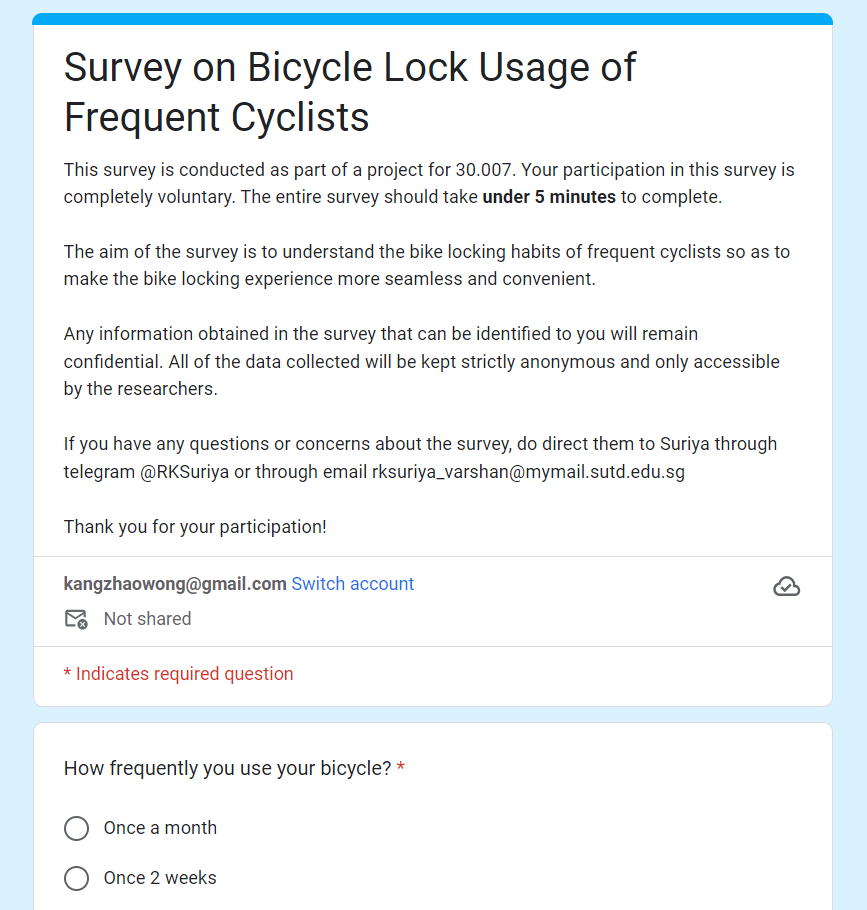

Click&Go!
Tags: Materials Fabrication, Materials Testing, Unity, C#, GPS,
Database, Firebase, HTML, JavaScript, Leaflet Maps, Arduino Programming
For my Engineering Design Innovation module in Term 4, my Team was
tasked to produce a product with the theme of travel. After research
on what constitutes travel and the problems associated with it, using
a Pugh chart, we chose the problems cyclists face. We then researched
more specifically on our chosen topic and conducted surveys to
understand their point of view. Through our surveys, it showed that
reducing time to lock, ability to adapt to a wide range of
infrastructure, and security were most desired (in that order of
importance).

We set our design statement to be: How may we make the locking and
unlocking of bicycles to infrastructure fast and seamless? As such, we
used these to form our goals to meet for our final product, a bicycle
lock. Once the goals were set, we started developing multiple ideas
and decided on the best idea to go ahead with using another Pugh
chart. We split the work into mechanical (includes simulations,
composite), electrical (includes PCB fabrication, simulation),
software (includes UI/UX, app development, database). We modeled and
simulated our locking mechanism, developed and tested mechanical
prototypes of the model, using 3d printing before fabricating the
actual product. We fabricated and tested each of the electrical
components to check if they will be able to meet the required goals. I
had 2 roles in this project, I was in charge of the fabrication and
testing of the carbon-fiber shell that protected the bicycle lock and
software of the product.
Due to prior experience in
fabricating composites, and the help of my team members we were able
to produce samples of the Carbon-fiber epoxy composite that I
performed flexural, tensile, and compressive tests using ASTM
standards. Using the material properties obtained from these tests, we
were able to simulate the properties of our bicycle lock under
different loading and impact. We also fabricated the actual shells
using the same process.
For the software side, we wanted an app that was able to alert the
owner if the bicycle was being stolen, have the ability to add or
remove bikes, check on the status of the battery of the bicycle, 2FA
authentication, was able to provide life tracking of the location of
al their bicycles, show distance to the bicycle, lock and unlock the
bicycle remotely through the internet or close range through
Bluetooth, and pair with the physical electronic key. I used unity for
the main app and their gps functionality, Firebase for the database, I
also used a free component that was able to open load a browser in the
app. The actual interface of the app was designed with html and
JavaScript, which I used Leaflet to generate the map. This was because
eventually I would like to turn this into a web application.
However, in the end we were only able to calculate and predict
empirically how fast we can launch the magnet and were not able to
figure out the formulas for the repulsion of the magnet as we did not
know how to calculate the force of repulsion that was generated when
the two magnets were touching. Even so, we can predict that although
this method was able to launch projectiles very quickly without much
stringency on time, the projectiles need to have their own magnetic
field. Rare earth magnets are not the best choice for these
applications as every time they are launched they will experience a
sudden change in magnetic field in the opposite direction. The result
of this would be it being demagnetised extremely quickly. As such,
electromagnets should also be used for the projectile. This means
higher power consumption but the electromagnets only need to be on for
a short while from the start to after it exits the coil.

The product was produced and presented to judges and we were awarded
Best Prototype by Singapore University of Technology & Design and
highest graded project within our cohort as we had demonstrated the
use of actual materials, components, programs and software and
delivered a finished product with high detail.